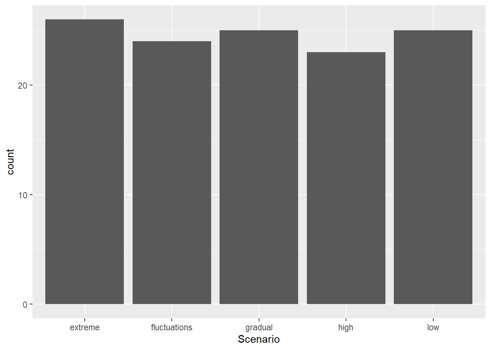

{kind=link}
install.packages("ggplot2")Quick Visualizations
Introduction
Visualizing data is a key step in any analysis. R provides powerful and flexible graphing tools, whether you are just starting to investigate the structure of your data, or polishing off the perfect figure for publication in a ‘tabloid’ journal like Science (https://www.science.org/journal/science) or Nature (https://www.nature.com/).
In this tutorial, you will learn how to make quick graphs with the ggplot() function from the ggplot2 package. We will go over some options for customizing the look and layout that will allow you to produce professional-grade graphs. In the next chapter you will learn some additional tricks and resources for developing your graphing skills even further.
By the time you are finished these two self-tutorials, you will have all the resources you need to make publication-ready graphics!
Both ggplot functions come from the ggplot2 package. It was developed by R Superstar Hadley Wickham and the team at posit.co, who also made R Studio, Quarto, shiny, dplyr, and the rest of the Tidyverse (https://www.tidyverse.org/) universe of helpful R packages.
Question: What happened to ggplot1?
Once you have mastered these tutorials, you might want to continue to expand your ggplot repertoire by reading through additional examples in the ggplot2 documentation: http://docs.ggplot2.org/current/
WARNING: There is a learning curve for graphing in R! Learning visualizations in R can feel like a struggle at first, and you may ask yourself: Is it worth my time?
If you already have experience making figures with point-and-click graphics programs, you may ask yourself: Why deal with all these coding errors when I can just generate a quick figure in a different program?
There are a few good reasons to invest the time to get over the learning curve and use R for all your graphing needs.
- You will get much faster with practice.
- You have much more control over every aspect of your figure.
- Your visualization will be reproducible, meaning anyone with the data and the code can reproduce every aspect of your figure, right down to each individual data point the formatting of each axis label.
The third point is worth some extra thought. Everybody makes mistakes, whether you are graphing with R or a point-and-click graphics program. If you make a mistake in a point-and-click program, you may produce a graph that is incorrect with no way to check! If you make an error in R you will either get an error message telling you, or you will have reproducible code that you can share with somebody who can check your work – even if that somebody is you, six months in the future. In this way, reproducibility is quality – an attractive but non-reproducible figure is a low-quality figure.
In addition to quality and scientific rigour, there is a more practical reason to value reproducible code. Consider what happens as you collect new data or find a mistake in your original data that needs to be corrected. With a point-and-click program you have to make the graph all over again. With R, you just rerun the code with the new input and get the updated figures and analyses! Later, we will learn how to incorporate code for figures along with statistical analysis into fully reproducible reports with output as .html (Website), .pdf (Adobe Acrobat), and .docx (Microsoft Word)
Graphical Concepts
Before we dive into coding for visualizations, there are a few universal graphing concepts that are important to understand in order to create publication-ready graphics in R: file formats, pixel dimension, screen vs print colours, and accessibility.
Vector vs Raster
There are many different file formats that you can use to save individual graphs. Each format has a different suffix or extension in the file name like .jpg, .png, or .pdf. Once saved, you can send these to graphics programs for minor tweaks, or you can send them directly to academic journals for final publication.
Importantly, file formats for visualizations fall into two main classes: Raster and Vector.
Raster files save graphs in a 2-dimensional grid of data corresponding to pixel location and colour. Imagine breaking up your screen into a large data.frame object with each pixel represented by a cell, and the value of each cell holding information about the colour and intensity of the pixel. You are probably quite familiar with this ‘pixel art’ format if you’ve ever worked with a digital photo or played a retro video game made before 1993. Some popular Raster file types include JPEG/JPG, PNG, TIFF, and BMP.
Vector files save information about shapes. Instead of tracking every single pixel, the data are encoded as coloured points mapped onto a two-dimensional plane, with points connected by straight or curved lines. To generate the image, the computer must plot out all of the points and lines, and then translate that information to pixels that display on your screen.
If you’ve ever drawn a shape in a program like Microsoft Powerpoint or Adobe Illustrator, you might have some sense of how this works. Some popular vector formats include SVG, PDF, EPS, AI, PS.
So, why does this matter?
In most cases, you should save your visualizations as vector files. SVG is a good choice, because it can be interpreted by web browsers and it is not proprietary. PDF and EPS are proprietary, from the Adobe company. But they are commonly used by publishers and can be viewed on most computers after installing free software.
Saving your graphs as a vector format allows you (or the journal proof editor) to easily scale your image while maintaining crisp, clear lines. This is because the shapes themselves are tracked, so scaling just expands or contracts the x- and y-axes.
In contrast, if you expand a raster file, your computer has to figure out how to expand each pixel. This introduces blurriness or other artifacts. You have seen some images that look ‘pixelated’ – this happens when you try to expand the size of a lower-resolution figure. This also happens when a program compresses an image to save space – the computer program is trying to reduce the data content by reducing the dimensionality of the image.
In summary, vector images are generally a better format to use when saving your figures because you can rescale to any size and the lines will always be clean and clear. There are a few important exceptions, however.
Photographs – Photographs captured by a camera are saved in the Raster format and cannot be converted to vector without significant loss of information.
Grid Data – Raster data are convenient for plotting data that occurs in a grid. This includes most spatial data that is broken up into a geographic grid. However, you may often want to use the vector format for mapping/GIS data so that the overlapping geographical features (e.g. borders, lakes, rivers) remain in the vector format, even if an underlying data layer is a raster object (e.g. global surface temperature in 1 × 1 km squares).
Large Data – With some large data applications (e.g. ‘omics’ datasets) a graphing data set may have many millions or even billions of data points or lines. In these cases, the vector file would be too big to use in publication (e.g. several gigabytes) or even too big to open on standard laptop or desktop computers. In this case you might opt for a high-resolution Raster file. On the other hand, you could graph your data using a representative subset of data or using a density grid with colours corresponding to the density of points. In each case, you would keep the vector format to maintain clean lines for the graph axes and labels, even though some of the data is in the raster format.
The bottom line: you generally want to save your graphics as SVG or PDF files if you plan to publish them.
Resolution vs Dimension
In cases where you do need to use raster images in a publication, pay careful attention to the image’s pixel dimension. You have probably heard about image resolution: For example, a 2 megapixel camera is better than a 1 megapixel camera; a 200 dpi (dots per inch) printer is better than 50 dpi. But when creating and saving raster images, it’s not just the resolution that matters, the image size also determines the quality of the final image. The size and resolution of an image jointly determine its pixel dimension.
Example: An image with 200 dpi that is 1 x 3 inches will have the same pixel dimension of an image with 100 dpi that is 2 x 6 inches. These images will look exactly the same if they are printed at the same size. The pixel dimension, not the resolution per se determines how crisp or pixelated an image looks.
Screen vs Print
Another important consideration is the intended audience and whether they will likely view your figures on a computer screen or printed page (or both). Each pixel of your screen has tiny lights that determine the specific colour that is reproduced. The pixels emit different wavelengths from your screen, which overlap in our eyes to produce the different colours that we see. In contrast, printed images get their colour from combinations of ink, which absorb different wavelengths of colour. This is a key distinction! One important consequence of this difference is that your computer monitor can produce a broader range of colours and intensities than a printed page, and therefore some colours on your computer monitor can look very different in print. In print, the intensity of colours are limited by the intensity of the Cyan, Magenta and Yellow inks that are used to reproduce the images. This is called CMYK printing.
Some programs like Adobe Illustrator have options to limit the screen to display only those colours that can be reproduced with CMYK printing.
Accessibility
Another important consideration about your choice of colours involves your audience. Remember that many cultures have particular intuitions about colours that can cause confusion if your choice does not match these expectations. For example, in Western European cultures, the red spectrum colours (red, orange, yellow) are often associated with ‘hot’ or ‘danger’ while blue spectrum (blue, cyan, purple) are more associated with ‘cold’ or ‘calm’. Given these biases, imagine how confusing it would be to look at a weather map that used blue for hot temperatures and red for cool temperatures.
In addition to cultural biases, a significant portion of the population has some form of colour-blindness that limits their ability to see certain colours. This article in Nature has a good explanation with tips for making inclusive figures: https://www.nature.com/articles/d41586-021-02696-z
The Simulated Colour Blind Palettes Figure shows a simulation of colour blindness, written in R. Note how certain reds and blue/purple are indistinguishable. A good strategy is to use different intensity as well as different spectra.
Note: If you are reading a black-and-white version of this book, this link will take you to a colour version of the image:
https://github.com/ColauttiLab/RCrashCourse_Book/blob/master/images/colorblind.png

There is also a more practical reason for this. It is common for scientists and students to print your manuscript or published article in black-and-white to read on public transit or during a group discussion. If you choose colours and shading that can be interpreted properly in black and white, then you will avoid confusion with this significant portion of your audience. The viridis package is a good tool for this. See: https://cran.r-project.org/web/packages/viridis/vignettes/intro-to-viridis.html
Getting Started
Install the ggplot2 package using the install.packages() function the first time you want to use it. This installs it on your local computer, so you only need to do it once – though it is a good idea to re-install periodically to update to the most recent version.
Once it is installed, you still need to load it with the library function if you want to use it in your code.
library(ggplot2)Data Setup
We will again be working with the FallopiaData.csv dataset, which can be downloaded here: https://colauttilab.github.io/RCrashCourse/FallopiaData.csv
Save this text file to a folder called Data inside your project folder. Be sure to save it as FallopiaData.csv and make sure the .csv is included at the end of the name.
Remember that you can find your current working folder with the getwd() function. You may want to make a new R Project directory as discussed in the R Fundamentals chapter.
Now load the .csv file into R as a data.frame object:
MyData<-read.csv("./Data/FallopiaData.csv", header=T)Alternatively, you can load the file right from the internet:
MyData<-read.csv(
"https://colauttilab.github.io/RCrashCourse/FallopiaData.csv")This dataset comes from the research group of Dr. Oliver Bossdorf at the University of Tübingen in Tübingen, Germany. It was published as part of a paper by Parepa and Bossdof Testing for allelopathy in invasive plants: it all depends on the substrate! (Biological Invasions, 2016), which you can find here: https://doi.org/10.1007/s10530-016-1189-z
Note: Tübingen is a historic university in wonderful little town on the Neckar River. Let’s inspect the
data.framethat was created from the data, to see what kind of data we are working with.

str(MyData)'data.frame': 123 obs. of 13 variables:
$ PotNum : int 1 2 3 5 6 7 8 9 10 11 ...
$ Scenario : chr "low" "low" "low" "low" ...
$ Nutrients : chr "low" "low" "low" "low" ...
$ Taxon : chr "japon" "japon" "japon" "japon" ...
$ Symphytum : num 9.81 8.64 2.65 1.44 9.15 ...
$ Silene : num 36.4 29.6 36 21.4 23.9 ...
$ Urtica : num 16.08 5.59 17.09 12.39 5.19 ...
$ Geranium : num 4.68 5.75 5.13 5.37 0 9.05 3.51 9.64 7.3 6.36 ...
$ Geum : num 0.12 0.55 0.09 0.31 0.17 0.97 0.4 0.01 0.47 0.33 ...
$ All_Natives : num 67 50.2 61 40.9 38.4 ...
$ Fallopia : num 0.01 0.04 0.09 0.77 3.4 0.54 2.05 0.26 0 0 ...
$ Total : num 67.1 50.2 61.1 41.7 41.8 ...
$ Pct_Fallopia: num 0.01 0.08 0.15 1.85 8.13 1.12 3.7 0.61 0 0 ...The data come from a plant competition experiment involving two invasive species from the genus Fallopia. These species were grown in planting pots in competition with several other species. The first four columns give information about the pot and treatments (Taxon = species of Fallopia. The rest give biomass measurements for each species. Each column name is the genus of a plant grown in the same pot.
Basic Graphs
Think back to the R Fundamentals Chapter, and you will hopefully recall the different data types represented by the columns of our data. For graphing purposes, there are really just two main types of data: categorical and continuous. Putting these together in different combinations with ggplot() gives us different default graph types.
Each ggplot() function requires two main components:
The
ggplot()function defines the input data structure. This usually includes a nested aesthetic functionaes()to define the plotting variables and adata=parameter to define the input data.the
geom_<name>()function defines the output geometry
Note that the <name> denotes a variable name that differs depending on the geography used to map the data. A detailed example of a complex ggplot graph is covered in more detail in the next chapter. For now, we’ll look at the most common visualizations, organized by input data type.
Specifically, we’ll consider effective graphs for visualizing one or two variables, each of which may be categorical or continuous.
One Continuous
Usually when we only have a single continuous variable to graph, then we are interested in looking at the frequency distribution of values. This is called a frequency histogram. The frequency histogram shows the distribution of data – how many observations (y-axis) for a particular range of values or bins (x-axis).
It is very common to plot histograms for all of your variables before running any kind of statistical model to check for outliers and the distribution type. This is covered in the book R STATS Crash Course for Biologists. Looking at the histograms is a good way to look for potential coding errors (e.g. outliers) and whether data are generally normal or should be transformed to meet the assumptions of our statistical models.
Histogram
ggplot(aes(x=Total), data=MyData) + geom_histogram()`stat_bin()` using `bins = 30`. Pick better value with `binwidth`.Note the two main components of our code: the ggplot() function defines the input data and the geom_histogram() function provides the mapping function.
Also note the warning message about binwidth in stat_bin(). This is not a problem, it is just R telling us that it chose a default value that may not be idea. We can try different values of binwidth= in the geom_histogram() function to specify the width of the bins along the x-axis. We’ll look at this in more detail later.
You can also see we get a warning message about stat_bin(). With R we can distinguish warning messages from error messages.
Error messages represent bigger problems and generally occur when the function doesn’t run at all. For example, if we wrote total instead of Total, we would get an error because R is looking for a column in MyData called total, which is not the same as Total with a capital T.
Warning messages don’t necessarily prevent the function from running, as in this case. However, it is still important to read the warning and understand if it is ok to ignore it. In this case, it is suggesting a different binwidth parameter. We’ll come back to this later when we explore some of the different parameter options.
Density
A density geom is another way to graph the frequency distribution. Instead of bars, a smoothed curve is fit across the bins, and instead of ‘count’ data, an estimate of the probability is shown on the y-axis.
ggplot(aes(x=Total), data=MyData) + geom_density()Notice that the y-axis says ‘density’, not probability? This curve is called a probability density function and we can calculate the probability of observing a value between two points along the x-axis by calculating the area under the curve for those two points. For example, integrating the total area under the curve should equal to a probability of 1.
One Categorical
If we input one variable that is categorical rather than continuous, then we are often most interested in looking at the sample size for each group in the category. In a classic ANOVA for example, you want to make sure you have a similar number of observations for each group.
Instead of geom_histogram() we use geom_bar()
Bar Graph
ggplot(aes(x=Scenario), data=MyData) + geom_bar()
Two Continuous
If we have two continuous variables, we are most often interested in the classic bivariate plot, sometimes called a scatter plot.
The bivariate plot or scatter plot is the ‘meat and potatoes’ of data visualization. By plotting two variables we can see if they are independent (‘shotgun’ pattern) or have some degree of correlation (oval sloped up or down). We can also look for outliers, which would be seen as isolated points that are far away from the main ‘cloud’ of points.
ggplot(aes(x=Silene, y=Total), data=MyData) + geom_point()
Two Categorical
Plotting two categorical variables is not so useful. Instead, we are better off making a summary table as described in detail the Data Science Chapter. Or, we can use the length function with aggregate() as introduced in the previous chapter:
aggregate(Total ~ Nutrients:Scenario, data=MyData, length) Nutrients Scenario Total
1 high extreme 26
2 high fluctuations 24
3 high gradual 25
4 high high 23
5 low low 25OR we can use the handy table() function if we want to summarize the variables as rows and columns:
table(MyData$Scenario,MyData$Nutrients)
high low
extreme 26 0
fluctuations 24 0
gradual 25 0
high 23 0
low 0 25In this case we can see that there is only one class of the “Low” Nutrient treatment, but four classes of “High” Nutrient treatments. In other words, all of the rows with “Low” Nutrient treatment also have the “Low” Scenario, and NONE of the rows with “High” Nutrient treatment have “Low” in the Scenario treatment. However, all groups have similar sample size of about 25. This is because the experiment compared low vs high nutrients, but also looked at different ways that high nutrients could be delivered.
Categorical by Continuous
If we have a categorical and a continuous variable, we usually want to see the distribution of points for the two variables. There are a few ways to do this:
Box Plot
The box plot is a handy way to quickly inspect a few important characteristics of the data:
- median: middle horizontal line (i.e. the 50th percentile)
- hinges: top and bottom of the boxes showing the 75th and 25th percentiles, respectively
- whiskers: vertical lines showing the highest and lowest values (excluding outliers, if present)
- outliers: points showing outlier values more than 1.5 times the inter-quartile range (i.e. 1.5 times the distance from the 25th to 75th percentiles). Note that not all data sets will have outlier points.
ggplot(aes(x=Nutrients, y=Total), data=MyData) + geom_boxplot()Violin Plot
Violin plots or Density strips are another popular way to plot these type of data. The ‘violin’ or ‘density’ refers to the smoothed frequency distribution, which is similar the the geom_histogram we saw above, but imagine fitting a smoothed line along the top of each bar, and then turning it on its side and mirroring the image.
It can be very helpful to include both the violin and boxplot geoms on the same graph:
ggplot(aes(x=Nutrients, y=Total), data=MyData) +
geom_violin() + geom_boxplot(width=0.2)Dotplot
The dotplot stacks points of similar value. It’s particularly useful for smaller datasets where the smooting of the density function may be unreliable. There are a couple of options here:
- You can use dotplots for individual variables
ggplot(aes(x=Total), data=MyData) +
geom_dotplot(binwidth=2)- Or for continuous-by-categorical (but note the extra parameters)
ggplot(aes(x=Nutrients, y=Total), data=MyData) +
geom_dotplot(binaxis="y", binwidth=2)
Done!
That’s it! That’s all you need to start exploring your data! Load your data frame, and plot different combinations of variables to look at the distribution of values or the relationship between your variables.
Once you are comfortable producing these plots with different data types, you might start thinking about how to improve the appearance of your graphs. Once you understand these basic data types, you can explore how to customize and improve their appearance.